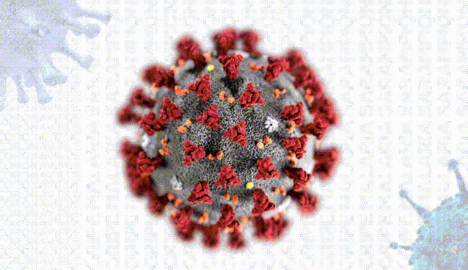

<ion-app>
  <ion-content fullscreen class="ion-padding" scroll-y="false">
    <ion-slides>

      <ion-slide>
        
        <h2>Covid-19</h2>
        <p>A Covid-19 é uma doença causada pelo coronavírus SARS-CoV-2, que apresenta um quadro clínico que varia de infecções assintomáticas a quadros respiratórios graves. De acordo com a Organização Mundial de Saúde (OMS), a maioria dos pacientes com Covid-19 (cerca de 80%) podem ser assintomáticos e cerca de 20% dos casos podem requerer atendimento hospitalar por apresentarem dificuldade respiratória e desses casos aproximadamente 5% podem necessitar de suporte para o tratamento de insuficiência respiratória (suporte ventilatório).</p>
        <ion-button (click) = "ApresentarSlides()" fill="clear">Saiba como se previnir<ion-icon slot="end" name="arrow-forward"></ion-icon></ion-button>
      </ion-slide>

    </ion-slides>
  </ion-content>
</ion-app>
